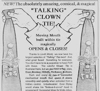

Talking Ties
9/10/2009
Question: I am a volunteer clown at three hospitals in Connecticut. I had an old product called the Talking Tie, and I used the inside to create a talking pocket for my costume lab coat. The patients love it and I enjoy using it. All my other clowns in the troupe would like one, but I can't find them anymore. A friend who works with puppets suggested I contact you. Do you know of these ties or know where I can get the little plastic inner workings? Any help that you are able to give me would be greatly appreciated.
* * * * * *
Answer: Your adaptation of the Talking Tie is a clever one, indeed! The Talking Ties were invented by our son, Kevin Detweiler. To increase the production, Craig and Pat Lovik of Lovik World were licensed to produce the tie puppets and did so for several years - until about 1994, I believe. Unfortunately, a marriage breakup eventually caused the demise of Lovik World and brought an end to the production of a number of unique and very popular puppets, including the Talking Tie. Kevin has made several efforts to again produce the ties himself, but so far, that has been unsuccessful. Ironically, another clown just sent us a copy of an old advertising flyer asking if they could purchase one of the "Clown Talking Ties"! I had to smile as I read this phrase at the bottom of the advertising piece, "The distributor of Talking Ties assumes no responsibility for what a tie says once it leaves the studio. After all, Talking Ties are actually just clever puppets for adults." That phrase was a result of complaints from a couple non-vent customers who could not get their ties to talk! They thought they had a defective tie and did not realize the tie was just a puppet and the wearer needed to provide the voice!
{kind=link}

* * * * * *
Answer: Your adaptation of the Talking Tie is a clever one, indeed! The Talking Ties were invented by our son, Kevin Detweiler. To increase the production, Craig and Pat Lovik of Lovik World were licensed to produce the tie puppets and did so for several years - until about 1994, I believe. Unfortunately, a marriage breakup eventually caused the demise of Lovik World and brought an end to the production of a number of unique and very popular puppets, including the Talking Tie. Kevin has made several efforts to again produce the ties himself, but so far, that has been unsuccessful. Ironically, another clown just sent us a copy of an old advertising flyer asking if they could purchase one of the "Clown Talking Ties"! I had to smile as I read this phrase at the bottom of the advertising piece, "The distributor of Talking Ties assumes no responsibility for what a tie says once it leaves the studio. After all, Talking Ties are actually just clever puppets for adults." That phrase was a result of complaints from a couple non-vent customers who could not get their ties to talk! They thought they had a defective tie and did not realize the tie was just a puppet and the wearer needed to provide the voice!